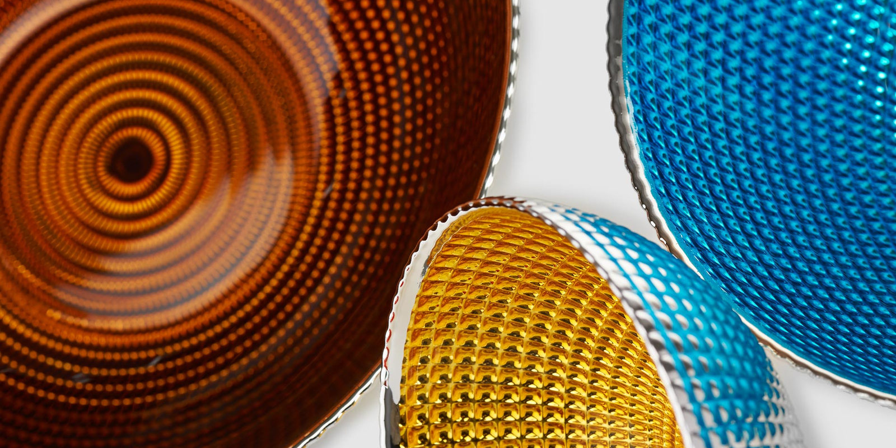
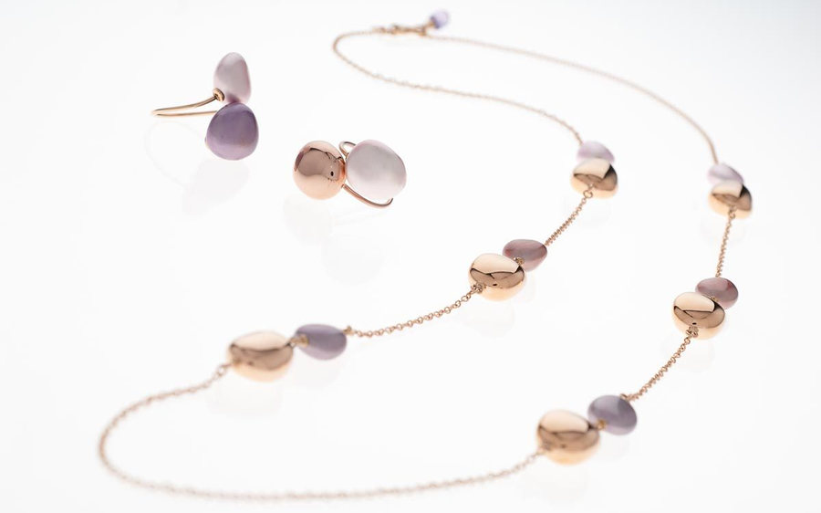

Le foto sono comunicazione silenziosa

Calegaro, ciotole in argento smaltato 1/4
Stefano Aiti fotografa oggetti, architetture e cantieri per le aziende, dal suo studio di Mestrino, in provincia di Padova.
Fotografa dal 1995, professionista dal 2008. Laureato allo Iuav in Architettura e in Comunicazioni visive e multimediali.
Architettura e contract
Banche e casse rurali arredate da Artufficio, le scale in marmo di Studio 4 Marmicolor, la Fornace Morandi.


Industria e cantieri

Con Aiti Studio il lavoro va dove si costruiscono strade e infrastrutture: reportage di cantiere e fotografia aziendale. Per Salima, Girardini, Martini Silvestro e per il cantiere Anas di Carpane.
«Ideazione, realizzazione ed editing vengono svolti totalmente da noi e con la nostra attrezzatura»
Aiti Studio, Mestrino
Per aziende orgogliose di ciò che fanno
Lago, Luceplan, Artufficio, Calearo, Calegaro, Bellissima Vodka, Trek, Goppion Caffè, Saip, Superoro, Pianegonda, e nei cantieri Salima, Girardini, Martini Silvestro
